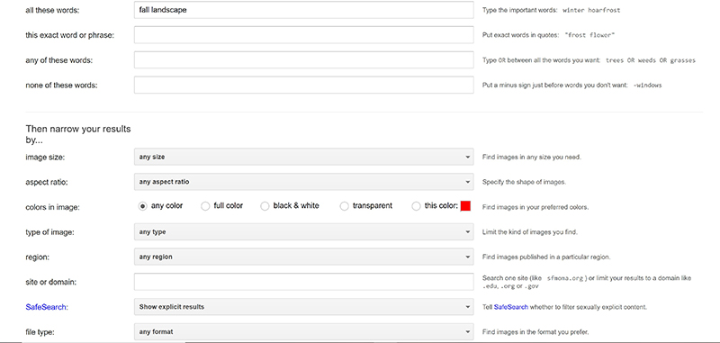
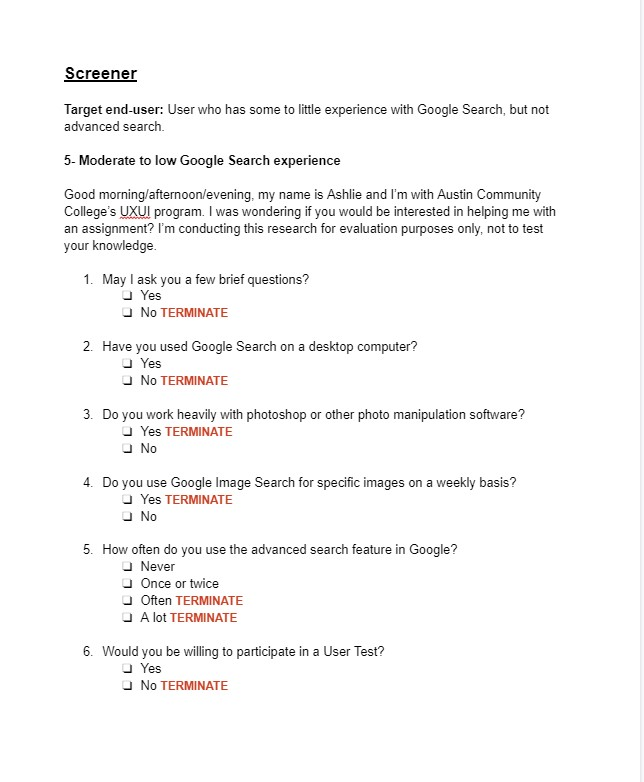
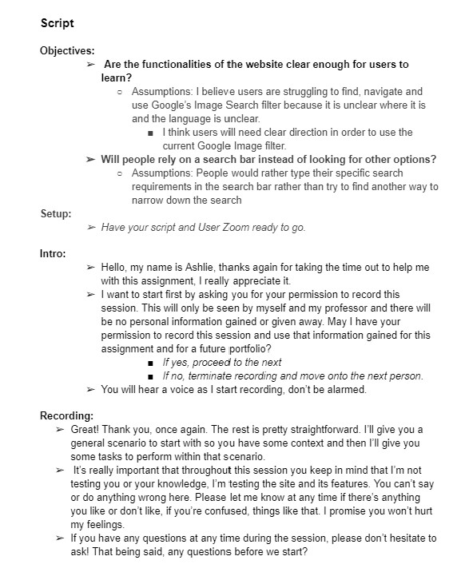
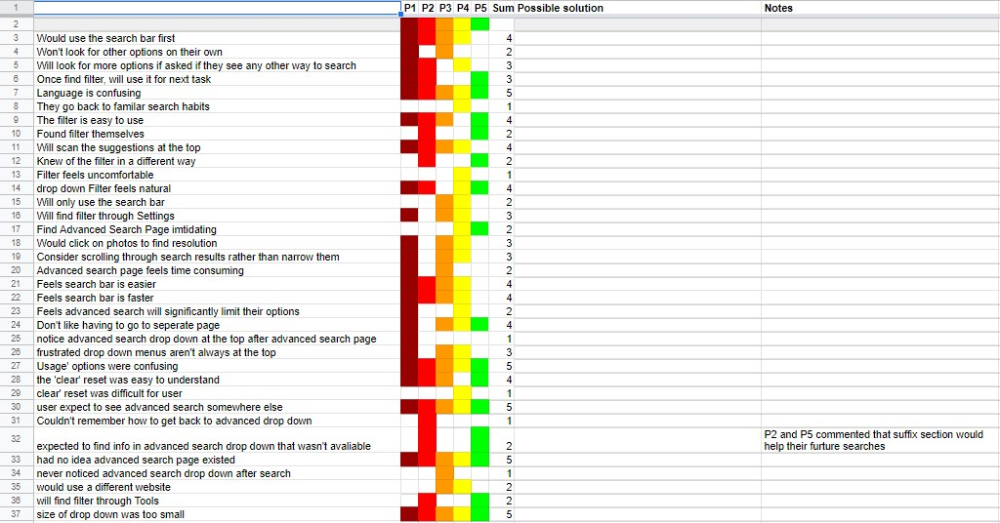
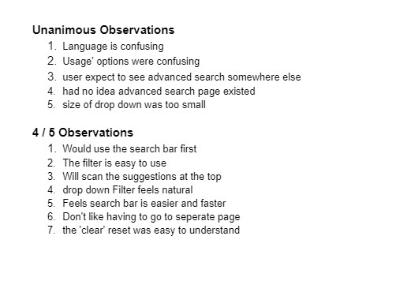
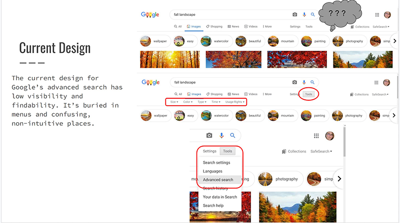
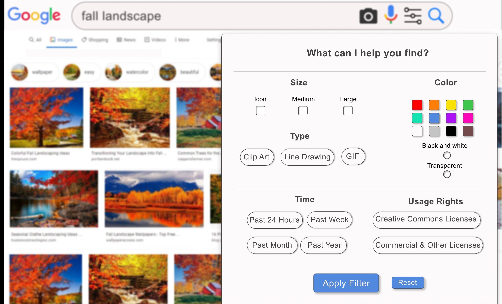

Google Advance Image Filter Re-design
In my design research class, I was asked to redesign Google’s advanced image filter based on real user interviews and compiling the data. I will take you step by step through my process.
The Problem
We start at the problem. Google’s current advanced image filter is practically invisible unless you either know where to look or you happen to stumble into it. I personally, happened to stumble into it when first taking on this assignment.
The filter is hidden under the search bar in the images tab. Not just hidden under the search bar, but you must dig for it in a sub menu! One of my interviewees was a teacher who makes a lot of slides for their class and uses the image search a lot. However, they had absolutely no idea this feature even existed!
This is the problem
Screener
Once I identified the problem, I outlined how I wanted to proceed. I started with a screener that would help me determine if my interviewers were qualified enough to help me with my research. This document allowed me to make sure I wasn’t wasting both our time. Once my candidates pasted this screener, I set up times to preform a remote meeting via User ZoomGo.
Usability Testing
During the meeting with interviewees, I followed this script. You're welcome to review it. This was usability test to test my theory that Google’s advanced image filter failed its user base. User ZoomGo was a great tool to use during the pandemic! I would record and take notes and interview remotely. It also allowed me the luxury of being able to go back and review and add more notes where I missed them before.
Synthasizing and Gaining Insight
I took the data from each interview and plugged in the things that I felt were the most important during the interview. I color coded the results based on each participant. It was clear from my findings that the image filter was failing the user base.
Presentation
I had to present my finding to “get approval” to go forward with a prototype of the filter redesign. This was so much fun because I felt so confident what I was presenting that I probably ended up taking more about my users than I should have. My audience was even impressed with my findings and research. Please review the presentation at your own discretion.
Prototype
I got the approval to build my prototype. I used Figma because I find it so much easier to use than Sketch or Adobe XD. This took me ages even though I cheated and used screenshots. I over thought the whole thing at one point and had to scale myself back. I’m incredibly proud of the work I did on this. Each section is clickable. Please feel free to test the prototype.